實驗室速查表（繁體中文）
課堂實驗考試卡 — 靜態分析、蒐證、憑證／IR、持久化、Volatility、NTFS
下載中文 PDF · English PDF · Overview · Home
- 只談偵測與鑑識 — 工具／指令字串是 IOC／狩獵模式，不是攻擊步驟。
- 截圖僅作溫習；完整實驗包／zip 不會在此發佈。
詞彙表（精簡）
- Entropy／打包（packing）
- 位元組隨機度偏高（常 >7.0）暗示可能被壓縮／加密／打包 — 只是線索，不是惡意軟體證明。
- imphash
- 依 PE 匯入表順序／名稱算出的雜湊；相近 imphash → 同一工具鏈／家族的樞紐候選。
- ssdeep
- 模糊雜湊；近似匹配可把只改了幾個位元組的變種歸群。
- Imports（匯入）
- PE 宣稱會呼叫的 API（網路、加密、程序）。與宣稱程式類型不符的匯入是狩獵線索。
- PE／MZ
- Windows 可執行檔格式；檔案或記憶體開頭的
4D 5A（「MZ」）標示 PE。 - 程序樹血緣（lineage）
- 父→子鏈（如
WINWORD→cmd）。不合理的父行程是強 IOC。 - Triage（分流蒐證）
- 選擇性複製高價值產物 — 不是整碟映像。
- collection_context／log.json
- 紀錄蒐證器抓了甚麼、何時、從哪部主機／路徑的清單。
- Dirty hive + .LOG1／.LOG2
- 系統仍在執行時複製的登錄巢；須連同交易紀錄一併蒐集以還原一致性。
- DCSync
- 濫用目錄複寫 API 拉取憑證材料；對比正常的 DC↔DC 複寫。
- krbtgt
- 網域 KRBTGT 帳戶；懷疑票證濫用後須旋轉兩次，令舊金鑰與中間金鑰都失效。
- Event 4104
- PowerShell 指令碼區塊記錄；當傾印工具是原生 EXE（不經 PS 引擎）時不會出現。
- 4688／Sysmon 1
- 程序建立事件（含命令列）— 原生傾印工具 IOC 字串的主要狩獵面。
- 分層持久化（layered）
- 多個獨立立足點；只清一個，其餘仍在。
- 互相還原（mutually restoring）
- 機制會彼此重裝；需要協調的清除視窗。
- PID 4 開機時間
- System 程序建立時間 ≈ 上次開機；單靠
windows.info得不到開機時間。 - ProfileList vs sessions
- 歷史曾登入 vs 擷取當下仍登入者。
- pslist／psscan／pstree
- 作用中清單 vs 記憶體掃描（隱藏／已結束、DKOM unlink）vs 父子樹。
- DKOM unlink
- 操縱核心物件，把程序從作用中清單解除鏈結，令
pslist看不到。 - getsids／S-1-5-18
- 程序權杖 SID；
S-1-5-18= 本機 SYSTEM。 - malfind
- 找私人 RWX 區；怪異程序內 RWX+MZ = 線索（JIT 會誤報）。
- modules vs driverscan
- 已載入映像 vs 驅動物件 — 用位址對應，不是名稱／數量。
- vadinfo 私人 vs 檔案對應
- 私人＝無檔案映射；挖空與反射載入都呈私人。
- Injection／hollowing／reflective／side-load
- 不同記憶體／磁碟模式 — 勿與 DLL 搜尋順序側載混淆。
- malfind --dump vs dumpfiles
- 擷取私人注入區 vs 從記憶體抽出仍有檔案對應的映像。
- NTFS 0x10 vs 0x30
- STANDARD_INFORMATION vs FILE_NAME 時間戳；SI／FN 不一致是時間戳竄改線索。
- MFTECmd
- Eric Zimmerman 的
$MFT／USN 時間線與 0x10 vs 0x30 檢查工具。
A 靜態／沙箱指令與 PE
01 — 各指令做甚麼
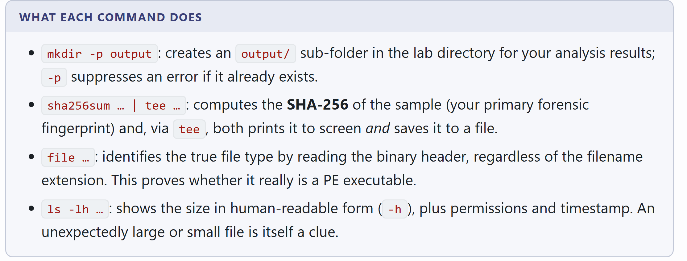
mkdir、sha256sum|tee、file、ls -lh意思 — 基本靜態分流：建工作目錄、記錄 SHA-256（用 tee 留底）、辨認檔案類型、記下大小。
考試為何重要 — 考試期望安全順序：先雜湊，之後所有筆記都綁定同一樣本身分。
例子 — 見到 sha256sum sample.exe | tee hash.txt，再 file 顯示「PE32 executable」— 把雜湊寫進報告開頭才做沙箱。
02 — 報告的靜態面板
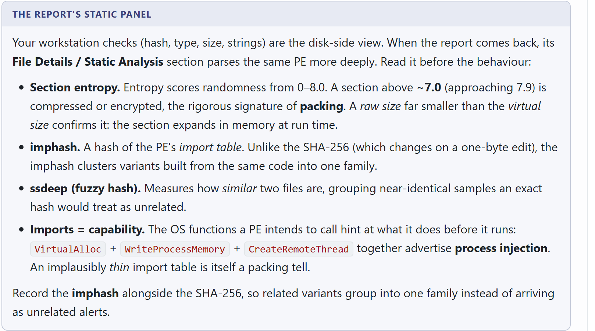
意思 — Entropy 量度隨機度（打包／加密提示）。imphash 指紋化匯入表。ssdeep 模糊匹配近似複本。Imports 列出宣稱 API。
考試為何重要 — 常考各欄位用途 — 以及高 entropy 本身 ≠ 惡意。
例子 — 面板顯示 entropy 7.4、imphash 接近已知打包家族、「計算機」卻匯入 WinHttpOpen — 是狩獵／歸群線索，不是定罪。
03 — PE／MZ + 程序樹血緣
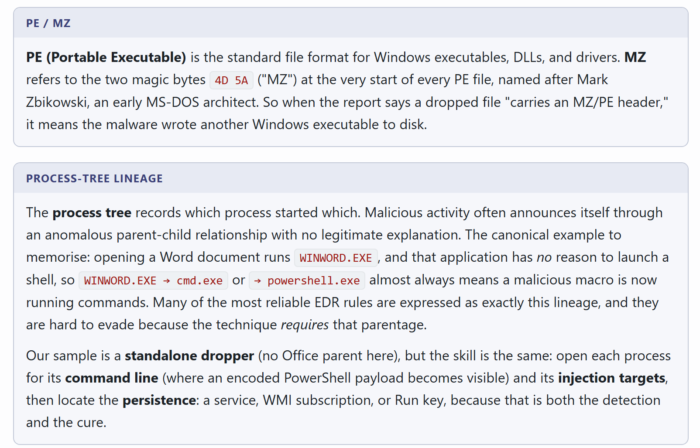
WINWORD→cmd/powershell）意思 — PE 以 MZ（4D 5A）開頭。血緣是沙箱或 EDR 樹上誰生出誰。
考試為何重要 — 抓不合理父行程：Office 生出 cmd／powershell 是經典 Day-1 IOC。
例子 — 沙箱樹：WINWORD.EXE → cmd.exe → 編碼 PowerShell — 標記血緣與子命令列為巨集驅動執行證據，而非「Word 是惡意軟體」。
04 — MITRE ATT&CK Day-1 子集
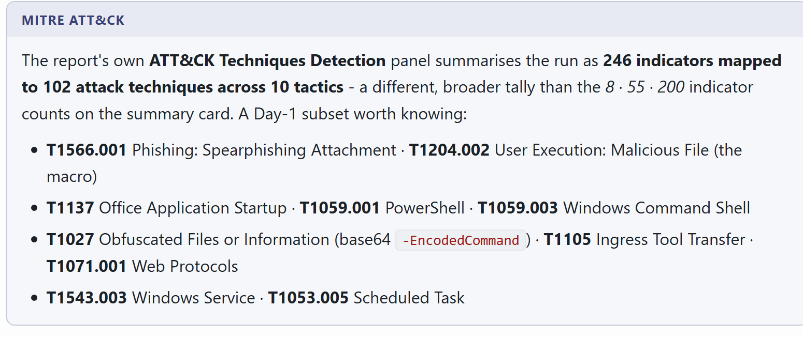
意思 — 涵蓋初始存取→執行→持久化的短技術清單，考試用來對應證據。
考試為何重要 — 把產物對到技術 ID（如排程工作 ↔ T1053.005），不要編造攻擊步驟。
例子 — 釣魚巨集 + Run key + 排程工作 → 引用 T1566.001、T1547.001、T1053.005，並附上證明的 Event ID／路徑。
B 分流蒐證與產物
05 — Triage = 選擇性複製
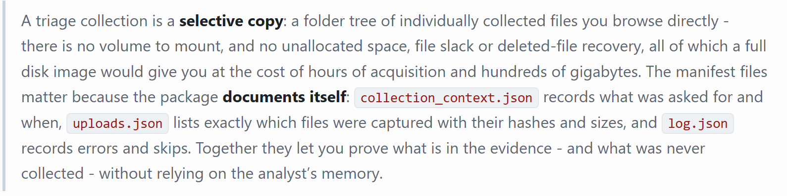
collection_context／uploads／log.json意思 — 分流抓高價值路徑（hive、EVTX、MFT、Prefetch…），不是整碟。collection_context 與 log.json 記錄實際落地內容。
考試為何重要 — 要懂 triage ≠ imaging；考題常靠讀清單找缺口。
例子 — 清單有 SOFTWARE 卻沒 SYSTEM — 在斷言「無服務持久化」前先記下蒐證不完整。
06 — 產物類別 → 路徑
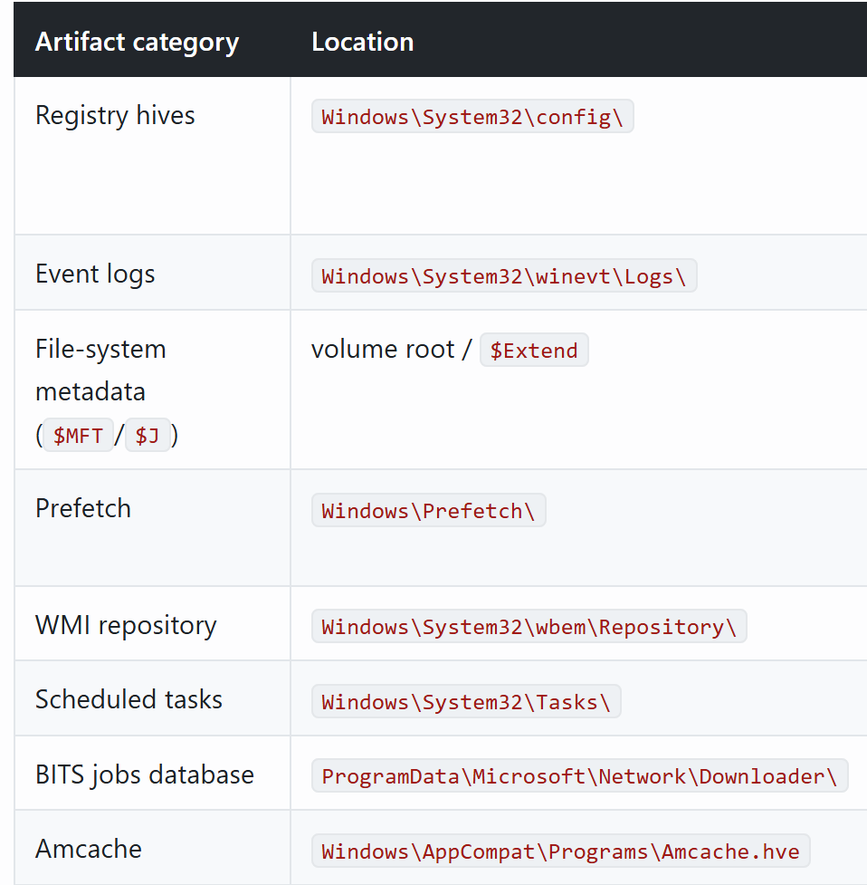
意思 — 證據類型對應預設 Windows 路徑的速查圖。
考試為何重要 — 速度題：「Amcache／Prefetch／Tasks 在哪？」純路徑記憶。
例子 — 問程式執行證據 → Prefetch + Amcache；問 WMI 持久化 → WBEM 下永久事件訂閱存放處。
07 — Dirty SOFTWARE hive
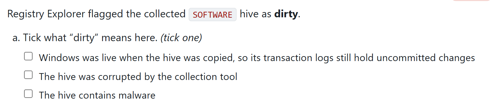
意思 — Windows 仍在執行時複製的巢是 dirty，須用鑑識解析器重播交易紀錄（.LOG1／.LOG2）。
考試為何重要 — 正確答案幾乎總是：巢 與 LOG 一併蒐集 — 只有巢可能漏近期機碼。
例子 — 測驗：動態 SOFTWARE 無 LOG → 不完整；hive + LOG1／LOG2 → 解析器可協調 dirty 寫入。
C 憑證傾印／DCSync／IR 應變
以下憑證存取工具只談 Security／Sysmon 會顯示甚麼與 要獵甚麼。可疑傾印工具命令列視為 IOC 字串（程序名 + 路徑 + 目標程序等），不是執行步驟。
08 — DCSync vs 合法複寫
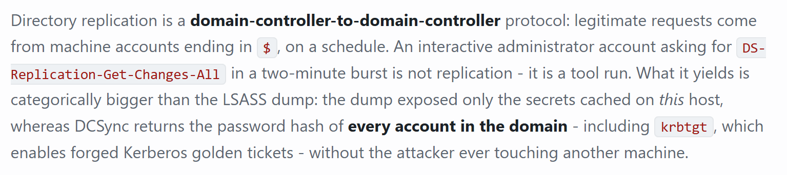
意思 — DC 使用的目錄複寫 API 也可被濫用拉取機密（DCSync）。合法流量是 DC↔DC；可疑是非 DC／異常主體行使複寫權。
考試為何重要 — 要把 4662 噪音與「非 DC 主體 + 複寫 GUID + 異常 4624 來源」分開。
例子 — 狩獵：Security 4662 帶複寫 GUID，Subject 是工作站系統管理員而非 DC 電腦帳戶 — 升級為 DCSync 類活動。
09 — 原生 EXE 傾印時不會有 4104
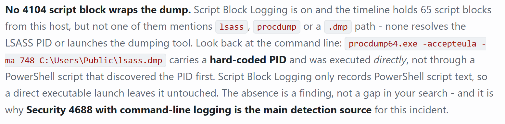
意思 — PowerShell 指令碼區塊記錄（4104）只看腳本。原生傾印 EXE 不進 PS 引擎，故 4104 安靜。
考試為何重要 — 改看程序建立命令列（4688／Sysmon 1）尋找命名傾印工具與 LSASS 目標的 IOC 字串 — 僅偵測模式。
例子 — 考試陷阱：「沒有 4104 ⇒ 沒有憑證傾印」為假。應獵 4688／Sysmon 1 中與 LSASS 存取工具一致的映像與命令列標記。
10 — DCSync 影響與補救
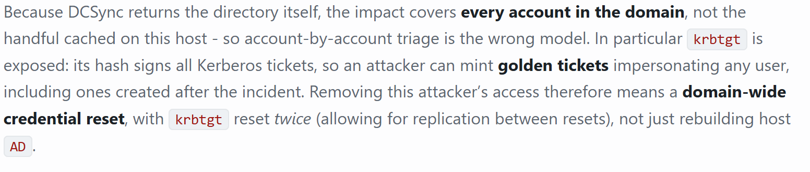
意思 — 若網域機密被拉取，視為憑證材料已燒毀；補救含大規模重設密碼與 KRBTGT 旋轉。
考試為何重要 — 記住 krbtgt ×2：只轉一次會留下仍可用於偽票的舊金鑰視窗。
例子 — 答題要點：隔離、依 IR 計劃網域級重設密碼、旋轉 krbtgt 兩次、狩獵 Golden Ticket 回流路徑。
11 — 網域淪陷 IR
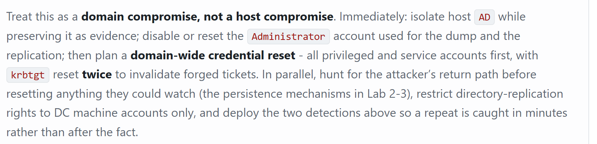
意思 — IR 劇本：遏制 AD 信任邊界、找出回流方式（持久化 + 身分），再做金鑰旋轉。
考試為何重要 — 順序：遏制 → 保全證據 → 清除持久化 → 重設／旋轉。
例子 — 情境答：把受影響 DC 從不可信網段隔離、保全日誌／記憶體、獵持久化，立足點清完後才 krbtgt×2。
D 持久化
12 — 分層持久化
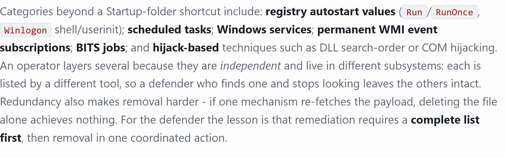
意思 — 多個獨立機制（Run key + 服務 + 工作 + WMI…）。清一個其餘仍在。
考試為何重要 — 考試：「先列齊再清」— 清單不全會答錯清理題。
例子 — 在 Autoruns 類別記下四個立足點，各以路徑+命令列+時間+帳戶確認，再計劃一次清四個。
13 — 互相還原的持久化
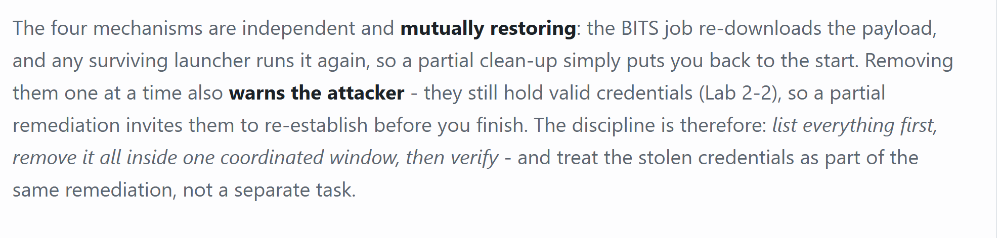
意思 — 機制 A 重裝 B、B 重裝 A（或監視者修復兩者）。
考試為何重要 — 需要協調視窗（或離線映像）令兩者同時消失。
例子 — 工作重造服務二進位、服務又重造工作 — 主機隔離下在同一變更視窗清兩者。
E 記憶體鑑識／Volatility
14 — 開機時間 + ProfileList vs sessions
windows.info 不會直接告訴你上次開機時間。System 程序（PID 4）在開機時建立、關機才結束，因此其建立時間就是開機時間。
vol -f <memory.raw> windows.info
vol -f <memory.raw> windows.pslist用 pslist（或 pstree）讀 PID 4／System 建立時間。
ProfileList vs windows.sessions
兩者回答的不是同一個問題：
| 外掛／機碼 | 回答甚麼 |
|---|---|
ProfileList（HKLM\...\ProfileList） | 曾登入過的每個帳戶 — 歷史紀錄 |
| windows.sessions | 擷取當下仍登入者 |
vol -f <memory.raw> windows.registry.hivelist
vol -f <memory.raw> windows.registry.printkey \
--key "Microsoft\Windows NT\CurrentVersion\ProfileList"
vol -f <memory.raw> windows.sessions
vol -f <memory.raw> windows.pstree意思 — 開機時間 ≈ PID 4 建立時間。ProfileList = 歷史設定檔；sessions = 傾印當下仍登入。
考試為何重要 — 陷阱題會把「曾經登入」與「現在登入」對調。
例子 — ProfileList 有 alice + bob；sessions 只有 alice → bob 是歷史，擷取時不在。
15 — pslist vs psscan vs pstree
| 外掛 | 做甚麼 |
|---|---|
| windows.pslist | 走 OS 的作用中程序清單。對正常執行中的程序又快又準。 |
| windows.psscan | 掃描原始記憶體找程序結構，不信任清單。可找到已結束，以及被刻意解除鏈結隱藏的程序。 |
| windows.pstree | 以父子樹顯示。多數問題在此浮現，因惡意常有不合理父行程。 |
考試提示：pslist ≠ psscan → 找隱藏或已結束程序（含 DKOM 式 unlink）。用 pstree 抓不可能血緣。
意思 — DKOM unlink = 程序仍在記憶體，但從作用中清單移除，使 pslist 漏掉；psscan 仍可能找到 EPROCESS。
考試為何重要 — 對兩個清單做差集；再用 pstree 找「怪父」。
例子 — psscan 有 malware.exe PID 4242 但 pslist 沒有 → 懷疑 unlink／隱藏；用該 PID 的 handles／netscan 確認。
16 — cmdline、dlllist、getsids、handles
| 外掛 | 顯示甚麼 | 為何重要 |
|---|---|---|
| windows.cmdline | 各程序的完整啟動命令列 | 編碼／混淆參數是強指標 |
| windows.dlllist | 各程序已載入模組（DLL） | 無理由連網的程序載入網路 DLL 是知名指標 |
| windows.getsids | 程序持有的 SID — 以誰的權限執行 | 平常低權限程式以 SYSTEM 跑代表已提權。SID S-1-5-18 是內建 SYSTEM（本機最高權） |
| windows.handles | 程序開啟的物件：檔案、登錄、命名管道 | 管道是同機惡意元件彼此通訊的一種方式 |
意思 — 四個「 enrichment」外掛：參數、模組、權杖 SID、開啟物件（含命名管道）。
考試為何重要 — 使用者程式出現 S-1-5-18 = 提權線索；記事本類程序出現異常 wininet／winhttp = C2 線索。
例子 — getsids 顯示 notepad 為 S-1-5-18；handles 見兩個 PID 間可疑命名管道 — 兩者都記為狩獵發現。
17 — netscan + malfind
windows.netscan
還原 TCP／UDP 端點，包括擷取時已關閉的通訊端。顯示本機／遠端位址、埠、連線狀態與擁有 PID。
windows.malware.malfind
標記可執行且可寫、但沒有磁碟檔案對應的記憶體。此組合是注入或反射載入程式碼的特徵。外掛會印出開頭十六進位，方便看是否以 4D 5A（MZ）開始。
誤報
部分合法軟體真的會配置 RWX — 任何有 JIT 編譯器者（瀏覽器、.NET 執行階段）。
值得跟進 = RWX 且 MZ 標頭 且 該程序沒理由這樣做。
把 malfind 當線索，不是結論。
意思 — netscan = 通訊端（含已關閉）。malfind = 私人 RWX；開頭 MZ 加強線索；JIT = 常見誤報。
考試為何重要 — 切勿單憑 RWX 報「惡意」— 要程序 + MZ + 行為脈絡。
例子 — spoolsv.exe 內 RWX+MZ 且 netscan 有罕見遠端 IP → 升級；chrome.exe 有 RWX 無 MZ → 多半 JIT，降低優先。
18 — windows.modules vs windows.driverscan
這兩個外掛報告的不是同一類東西。
| 外掛 | 走過甚麼 | 如何命名 |
|---|---|---|
| windows.modules | 核心的已載入模組映像清單 | 以檔名 — ntoskrnl.exe、hal.dll、\SystemRoot\system32\ 路徑 |
| windows.driverscan | 掃描記憶體找驅動物件 | 在裝置命名空間 — \Driver\HTTP、\Driver\00000311 |
一個映像可擁有多個驅動物件；掃描也可能重複找到同一物件。
證明／不證明甚麼
- 比較兩個數量證明不了甚麼 — 它們數的是不同種類。
- 比較兩個名稱清單證明不了甚麼 —
ntoskrnl.exe與\Driver\HTTP不在同一命名空間，名稱不會對上。
有意義的比較
用位址對應：取 driverscan 每個驅動物件的 Start，找 modules 中 Base … Base+Size 涵蓋它的模組。
Start 落在任何已載入模組之外的驅動物件值得調查 — 核心空間有模組清單解釋不了的執行碼。
實驗範圍註：完整位址對應可能超出單日練習；仍應兩者都跑、記錄數量，並清楚說明檢查能／不能支持甚麼。
意思 — modules = 檔名映像；driverscan = \Driver\ 物件。有意義的接合是位址範圍。
考試為何重要 — 考試陷阱：「數量不同 ⇒ rootkit」錯；「孤兒 Start 位址」才是訊號。
例子 — Driver Start 0xFFFFF80001234000 不在任何 modules Base..Base+Size → 調查無法解釋的核心碼。
19 — modules／driverscan 實際顯示了甚麼
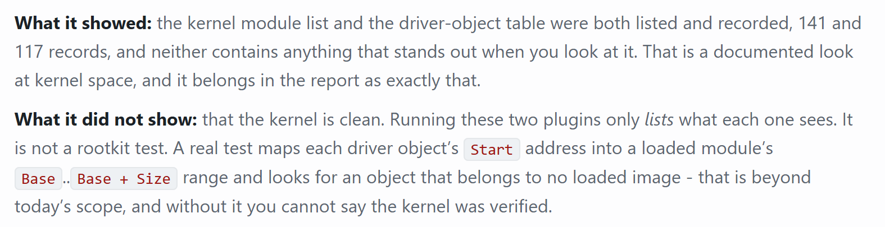
意思 — 有清單只證明你跑過外掛 — 不證明主機乾淨。
考試為何重要 — 要寫限制：沒做位址對應就不能說「無隱藏驅動」。
例子 — 實驗報告：「已跑 modules + driverscan；記錄數量；位址圖暫緩 — 單有清單 ≠ 乾淨。」
20 — vadinfo：挖空 vs 反射
兩欄一起看，不是只看一欄。
windows.vadinfo 列出程序記憶體區域，並標示是否由磁碟檔案對應。這分開檔案對應碼與私人碼。
它無法單憑此分開程序挖空與反射載入，因為兩者都是私人。還要檢查主映像區域是否仍完整。
命名技術前先讀兩邊。
意思 — 私人 VAD = 非由檔案映射。挖空與反射都呈私人；還要看主映像 VAD 是否健康。
考試為何重要 — 不要只因「私人」就寫「挖空」。
例子 — 私人 RWX + 主映像仍有檔案對應 → 偏反射／注入；程序名看似合法但主映像區被換／空 → 偏挖空假說。
21 — Injection vs hollowing vs reflective
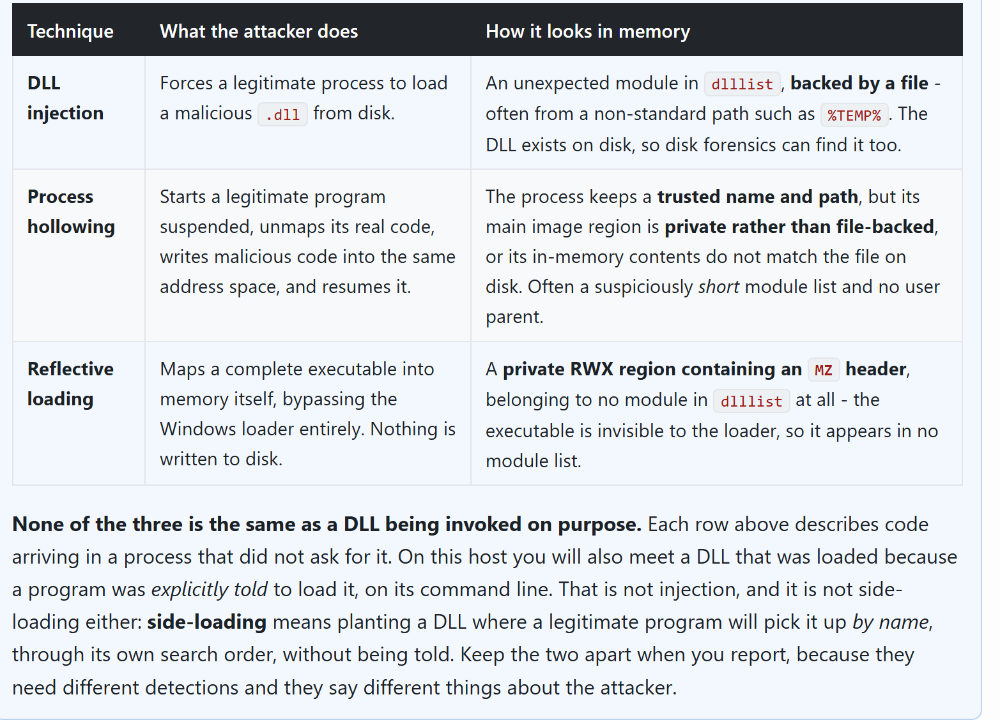
意思 — Injection：把外來碼放進仍活的程序。Hollowing：替換已啟動程序的內容。Reflective：不經正常載入器從記憶體載入 PE。Side-load：把 DLL 放到受信任程式會依搜尋順序載入的磁碟位置。
考試為何重要 — Side-load 是磁碟／搜尋順序故事；其餘主要是記憶體故事。
例子 — 可疑 DLL 以檔案形式放在已簽署 EXE 旁 → 側載線索；記憶體私人 MZ 且主映像完整 → 反射／注入線索。
22 — malfind dump vs dumpfiles
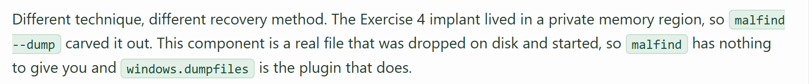
malfind --dump；磁碟對應 → dumpfiles（鑑識擷取外掛）意思 — 用 malfind --dump 擷取私人注入區；當映像（曾）有檔案對應且仍被記憶體引用時用 dumpfiles。
考試為何重要 — 選錯外掛會得到空或不符題意的產物。
例子 — 考試：「抽出無磁碟路徑的注入 PE」→ malfind dump；「還原仍由 System32 映射的 DLL」→ dumpfiles。
F NTFS／MFTECmd
23 — NTFS 0x10 vs 0x30（時間戳竄改線索）
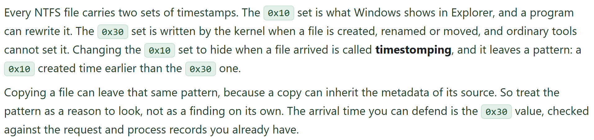
意思 — 屬性 0x10（STANDARD_INFORMATION／SI）常是 Explorer 類時間戳所見；0x30（FILE_NAME／FN）更新方式不同，簡單竄改較難兩邊一致。
考試為何重要 — SI≪FN 等不一致是timestomp 線索，本身非證明 — 要對 $J／Prefetch／日誌交叉。
例子 — 同一紀錄 SI Created 遠早於 FN Created → 標記時間戳竄改線索；用 USN 與父資料夾時間確認。
24 — MFTECmd
Eric Zimmerman 的 MFT 解析器 — 用於 $MFT／$J（USN）時間線、建立／修改／刪除，以及檢查 0x10 vs 0x30 時間戳。
典型實驗路徑：
C:\Training\Tools\EricZimmerman\MFTECmd.exe常搭配：Timeline Explorer、AmcacheParser、Hayabusa。
意思 — 把 MFT／USN 解析成 CSV 供時間線工具；露出 SI vs FN 欄位供時間戳狩獵。
考試為何重要 — 要知道「0x10 vs 0x30」題用哪個工具（MFTECmd + Timeline Explorer）。
例子 — 用 MFTECmd 匯出 $MFT → 在 Timeline Explorer 開啟 → 過濾事件視窗附近的 SI／FN 不一致。
- 靜態順序：雜湊 →
file→ entropy／imphash → imports → 沙箱血緣 - Dirty hive → 蒐集巢 與 交易紀錄
- 原生傾印 EXE → 無 PS 4104；獵 4688／Sysmon 1 命令列 IOC
- DCSync 補救 → 網域級重設 + krbtgt ×2
pslist≠psscan；malfind = 線索（RWX+MZ+怪異程序）- modules vs driverscan → 用位址對應，不是名稱／數量
- vadinfo：私人 vs 檔案對應；挖空 + 反射都是私人
- Timestomp 線索：SI（
0x10）vs FN（0x30）不一致